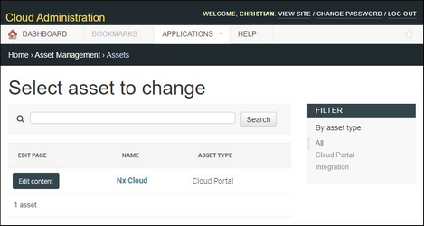

Assets |
  
|
Assets |
|
This page provides a table of the assets on your CMS site.

Available actions are:
•Edit content – takes you to a list of all the pages you can edit for that asset.
•Add asset – takes you to a page where you can create a new asset (see "Add asset").
•Name (i.e., Nx Cloud) – takes you to a page where you can view asset information, change the name, or view the history of changes (see "Change asset").
Sort & Filter Options
•This table can be sorted by clicking on the "Name" or "Asset Type" column headers. Click on more than one header to stack sort.
•The search tool applies to all fields in the table.
•Assets can be filtered by their type by using the filter list to the right of the table.